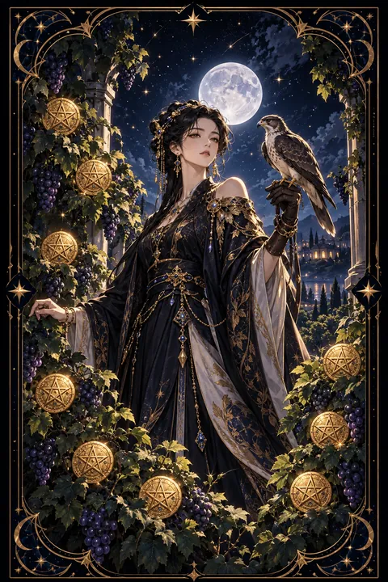

이 게시물은 쿠팡 파트너스 활동의 일환으로, 이에 따른 일정액의 수수료를 제공받습니다.


펜타클 9 카드 — 스스로 일군 넉넉함
펜타클 9 카드 한눈에 보기
펜타클 9 카드 상징 읽기

동네보살의 카드 그림은 전통 라이더–웨이트 덱의 뜻을 새 그림으로 옮긴 것입니다. 아래 상징 설명은 전통 덱의 그림을 기준으로 합니다.
펜타클 9에는 금빛 꽃무늬 옷을 입은 여인이 포도 넝쿨이 무성한 정원에 홀로 서 있습니다. 넝쿨 사이에 열린 아홉 개의 동전은 오랜 노력이 풍성한 결실로 맺혔다는 뜻입니다.
여인의 장갑 낀 손 위에 앉은 매는 머리에 두건을 쓰고 있습니다. 사나운 새를 길들인 모습은 욕망과 충동을 다스릴 줄 아는 절제력을 나타냅니다. 자제할 줄 알기에 풍요를 오래 지킬 수 있다는 의미입니다.
여인의 발치를 기어가는 달팽이는 느리지만 꾸준한 걸음을 상징합니다. 멀리 보이는 저택은 스스로 마련한 안정된 터전을 보여 줍니다.
여인 곁에 다른 사람이 없다는 점도 눈여겨볼 만합니다. 누구에게도 기대지 않고 자기 힘으로 이룬 풍요, 그리고 혼자 있는 시간을 즐길 줄 아는 성숙함이 이 카드의 핵심입니다.
펜타클 9 카드 정방향 뜻
정방향 펜타클 9는 스스로의 노력으로 얻은 풍요와 여유를 누리는 시기를 뜻합니다. 오랫동안 성실하게 쌓아 온 것이 눈에 보이는 결실로 돌아오고 경제적으로도 한숨 돌릴 수 있는 흐름입니다.
이 카드는 남에게 기대지 않는 자립의 힘을 강조합니다. 혼자서도 충분히 삶을 꾸려 갈 수 있다는 자신감이 생기고 그 당당함이 주변에도 좋은 인상을 줍니다.
지금은 그동안 수고한 자신을 대접해도 좋은 때입니다. 작은 사치나 취미 생활로 스스로를 격려해 보세요. 다만 매를 길들인 여인처럼 절제를 잃지 않는 것이 중요합니다. 누리는 몫과 모아 두는 몫을 나누어 두면 이 넉넉함이 오래 이어집니다. 혼자 보내는 시간을 즐기며 앞으로의 삶을 차분히 설계해 보는 것도 좋습니다. 스스로 이룬 것을 인정하는 마음이 다음 걸음을 가볍게 합니다.
펜타클 9 카드 역방향 뜻
역방향 펜타클 9는 풍요의 모양은 갖췄지만 속이 비어 가는 상태를 보여 줍니다. 남에게 보여 주기 위한 소비가 늘거나 형편보다 큰 씀씀이로 살림이 흔들릴 수 있습니다.
스스로 설 수 있는 힘이 있는데도 누군가의 도움이나 인정에 기대려는 마음이 부풀어 오르는 시기이기도 합니다. 반대로 여유를 지키려고 일에만 매달린 나머지 정작 삶을 즐길 여유를 잃어버린 모습일 수도 있습니다.
가진 것을 잃는다는 경고라기보다 균형을 다시 잡으라는 신호로 읽는 편이 맞습니다. 이번 달 지출을 적어 보고 체면 때문에 쓴 돈이 얼마인지 확인해 보세요. 스스로 해낼 수 있는 일부터 하나씩 되찾으면 자립의 감각이 돌아옵니다. 쉬는 날을 달력에 먼저 표시해 두는 것도 좋은 방법입니다. 겉모습 대신 속을 채우는 선택이 진짜 풍요를 되돌려 줍니다.
연애에서 펜타클 9 카드
솔로라면 혼자서도 행복한 당신의 모습이 가장 큰 매력이 되는 시기입니다. 빈자리를 메우려는 조급한 만남보다 삶의 여유를 함께 나눌 수 있는 사람을 천천히 찾아보세요. 취향이 분명하고 자기 생활이 단단한 사람과 인연이 닿기 쉽습니다.
지금 누군가와 사랑을 이어 가는 중이라면 서로에게 기대기보다 각자의 삶을 존중하는 성숙한 관계가 만들어집니다. 함께 좋은 음식을 먹거나 여행을 계획하며 그동안의 수고를 나누어 누려 보세요. 다만 선물의 크기로 마음을 재려 하면 관계가 피곤해집니다. 혼자만의 시간을 서로 보장해 주는 배려가 이 카드가 말하는 건강한 사랑입니다. 상대가 이룬 일을 내 일처럼 기뻐해 주는 한마디가 두 사람의 정원을 더 풍성하게 가꿉니다. 두 사람 모두 제 발로 설 때 사랑도 오래 머뭅니다.
재회·속마음 질문에서 펜타클 9 카드
재회 질문에서 펜타클 9가 나오면 먼저 스스로의 삶을 단단히 세우는 것이 재회의 열쇠라는 뜻입니다. 상대 없이도 잘 지내는 당신의 모습이 오히려 상대의 관심을 다시 끌 수 있습니다. 매달리거나 조급하게 연락하기보다 자신의 일과 생활을 가꾸며 여유를 되찾아 보세요. 다시 만나게 되더라도 한쪽이 기대는 관계가 아니라 나란히 서는 관계가 되어야 오래갑니다. 외로움 때문에 돌아가려는 것인지 그 사람이어서 돌아가려는 것인지 스스로에게 솔직하게 물어보는 시간도 필요합니다. 혼자 있는 시간이 편안해졌을 때 연락해도 늦지 않습니다. 그때의 연락은 매달림이 아닌 반가운 안부로 전해집니다.
일·금전에서 펜타클 9 카드
일과 직장에서는 혼자서도 일을 끝까지 책임지는 힘을 높이 평가받는 시기입니다. 혼자 책임지는 업무나 프리랜서 활동, 자기 사업처럼 스스로 결정하는 일에서 실력이 돋보입니다. 그동안 쌓은 경력이 대우와 보상으로 돌아올 가능성도 큽니다. 남의 지시를 기다리기보다 스스로 일정을 짜고 결과를 챙기는 태도가 윗사람과 고객의 믿음을 삽니다.
금전 면에서는 살림에 여유가 생기는 때입니다. 모아 둔 저축이 든든한 버팀목이 되어 주니 필요한 곳에 쓰되 나머지는 비상금으로 남겨 두세요. 수입이 늘었다고 생활 규모를 한꺼번에 키우기보다 누리는 몫을 정해 두는 편이 안정적입니다. 넉넉해진 때일수록 고정 지출을 한 번 점검해 여유를 오래 지키세요.
펜타클 9 카드는 예일까 아니오일까
그동안의 노력이 결실을 맺고 스스로의 힘으로 원하는 것을 누리게 된다는 뜻이라 긍정의 답에 가깝습니다. 역방향으로 나왔다면 겉모습이나 남의 도움에 기대는 마음을 먼저 걷어 내야 해서 조건부가 됩니다.
자주 묻는 질문
펜타클 9 카드 역방향은 나쁜 뜻인가요?
역방향 펜타클 9는 풍요의 모양은 갖췄지만 속이 비어 가는 상태를 보여 줍니다. 남에게 보여 주기 위한 소비가 늘거나 형편보다 큰 씀씀이로 살림이 흔들릴 수 있습니다.
펜타클 9 카드가 연애 질문에 나오면요?
솔로라면 혼자서도 행복한 당신의 모습이 가장 큰 매력이 되는 시기입니다. 빈자리를 메우려는 조급한 만남보다 삶의 여유를 함께 나눌 수 있는 사람을 천천히 찾아보세요. 취향이 분명하고 자기 생활이 단단한 사람과 인연이 닿기 쉽습니다.
타로 카드는 어떻게 뽑나요?
타로 카드 페이지에서 78장을 섞으면 그중 22장이 펼쳐집니다. 마음이 가는 세 장을 고르면 과거·현재·미래 자리에 놓이고, 한 장씩 뒤집어 자리와 방향에 맞는 풀이를 읽습니다. 정방향과 역방향은 섞는 순간 정해집니다.